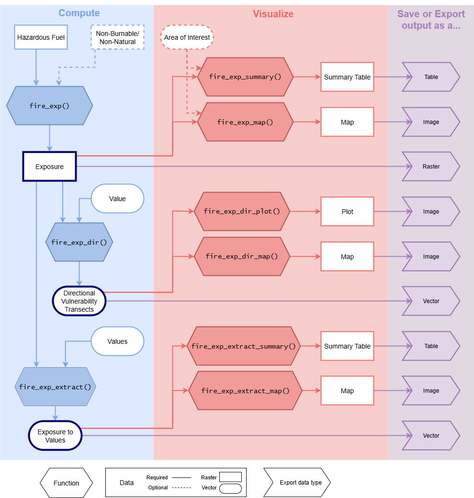

Here are some considerations for choosing your raster data. You can find even more discussion about this topic in Forbes and Beverly (2024).
Determine required input datasets
Consult the flowchart and table to determine the input data required
to reach a desired output. Note that using
fire_exp_validate() has more requirements, see the details
in the function documentation.

| Desired Output | Required Raster Data | Optional Raster Data | Required Vector Data | Optional Vector Data |
|---|---|---|---|---|
| Exposure | Hazardous Fuel | Non-Burnable | Area of Interest (Polygon) | |
| Directional Vulnerability Transects | Hazardous Fuel | Non-Burnable | Value (Point or Simple Polygon) | |
| Exposure to Values | Hazardous Fuel | Non-Burnable | Values (Multi-Point or Multi-Polygon) |
Raster Data
The hazardous fuel raster and optional non-burnable raster should be derived from the same land cover information product.
Determine minimum data requirements
The minimum spatial resolution and extent requirements will depend on a variable Transmission Distance and Area.
Minimum Spatial Resolution = Transmission Distance / 3
Minimum Spatial Extent = Area + Buffer of Transmission Distance
Transmission Distance
| Transmission Distance | |
|---|---|
| Long-range embers default | 500 m |
| Short-range embers default | 100 m |
| Radiant heat default | 30 m |
| Custom * | x m |
* This is only recommended if the default values do not represent fire behaviour in the area of interest.
Area
| Desired output | Area |
|---|---|
| Exposure | Optional provided polygon area OR input raster extent * |
| Transects | Value extent + Buffer of Total Transect Distance (default is 15000 m) |
| Values | Values extent + Buffer of Transmission Distance |
* Note that a negative transmission distance buffer will be lost due to edge effects
Additional considerations
Temporal resolution
When sourcing a ready-made land cover information product it may need to be updated to reflect the current land cover composition if it was produced in the past. Consider if there has been significant changes to land cover types between now and the data production date. For example, a dataset could be updated to reflect recent wildfire disturbances by overlaying fire perimeters.
land cover classifiers
When sourcing or creating a land cover information product it is also important to consider the classification scheme that is used. It needs to be possible to determine if a fuel will be hazardous at the chosen ‘Transmission Distance’ based on the classifier. For example, conifer fuels are considered hazardous to long-range ember transport in Alberta. If the land cover classifiers only specify if an area is “Forest” but does not differentiate between the tree species it would not be possible to determine which cells are hazardous for long-range embers.
Example land-cover datasets
Here are some readily available land-cover information products for your consideration. If you have suggestions of datasets to add, please contact me and I can add them here!
Note that the land cover classifiers used in some of these products may not be appropriate for all areas of interest. If readily made products are not appropriate out of the box, consider modifying, updating, or combining them. It is also possible to create your own landcover data.
Reclassifying to Hazardous fuel layer
Once a land cover dataset is chosen it needs to be reclassified into a hazardous fuel layer. First, determine the land cover types that have the potential to transmit and receive embers at the transmission distance of interest. These hazard classifications may vary for different transmission distances. For example, conifer forests are hazardous to both long- and short- range embers, but deciduous forests may only be hazardous to short-range embers.
There are two documented methods for hazard reclassification; binary (as presented in Beverly et al. 2010, Beverly et al. 2021, Khan et al. 2025) or proportional (as presented by Schmidt et al. 2024). Both methods can be used to compute the exposure metric with fireexposuR. The binary method reclassifies the landscape into either hazardous represented with a 1, or non-hazardous represented with a 0. The proportional method uses a range of values from non-hazardous (0) to hazardous (1), where proportional values can be used to the magnitude of the hazard (e.g. a value of 0.5 will be weighted as 50%). Consultation with local wildfire experts may assist in deciding which method is best for an area of interest. If the exposure metric has not been validated in the area of interest and multiple reclassification options are proposed, consider using the validateexp() function if the additional required data is available.
References
Beverly JL, McLoughlin N, Chapman E (2021) A simple metric of landscape fire exposure. Landscape Ecology 36, 785-801. DOI
Beverly JL, Bothwell P, Conner JCR, Herd EPK (2010) Assessing the exposure of the built environment to potential ignition sources generated from vegetative fuel. International Journal of Wildland Fire 19, 299-313. DOI
Forbes AM, Beverly JL (2024) Influence of fuel data assumptions on wildfire exposure assessment of the built environment. International Journal of Wildland Fire 33, WF24025 DOI
Khan SI, Colaço MC, Sequeira AC, Rego FC, Beverly JL (2025) Validating a landscape metric to map fire exposure to hazardous fuels in Portugal.Natural Hazards 121, 16273–16295. DOI
Schmidt JI, Ziel RH, Calef MP, Varvak A (2024) Spatial distribution of wildfire threat in the far north: exposure assessment in boreal communities. Natural Hazards 120, 4901-4924. DOI